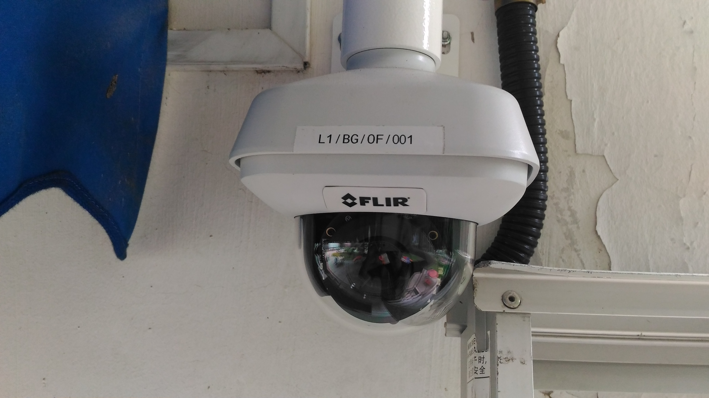
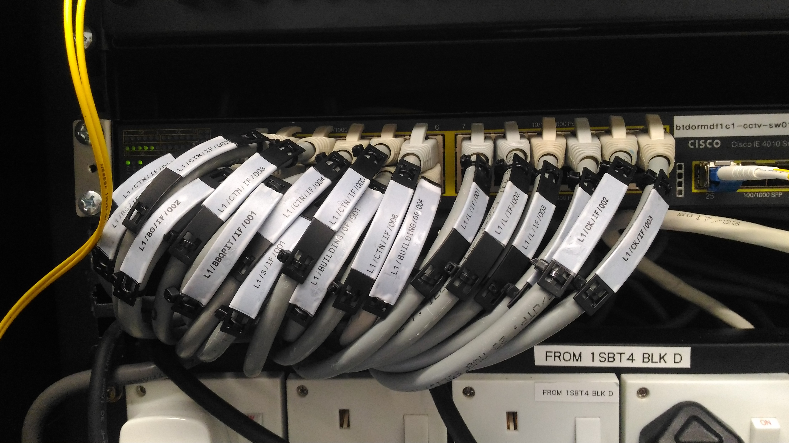

Edison Tan
Full Stack Developer
90063598
edisontan89@outlook.com
Profile
Diligent Information Technology student at Singapore Polytechnic with a strong focus on FrontEnd, Backend, Node.js, MySQL, and JavaScript. Seeking a Full Stack Developer position to utilize my proven skills and knowledge in these areas. Recognized by peers for my diligence and reliability, I am committed to supporting your company in achieving its goals while enhancing its profile and customer base.
Education
-
Mee Toh School

November 2004 — November 2010
-
GreenDale Secondary School

September 2010 — September 2014
-
Nitec In Security Technology, ITE College West

January 2015 — December 2016
-
Higher Nitec In Security System Integration, ITE College West
March 2017 — March 2018
-
Diploma In Information Technology, Singapore Polytechnic

April 2021 — Present
Hobbies
During my free time i like to play computer games like metal gear soild , gta v and darksouls i also like to cycle and build lego technic if i have extra time.
computer Games
Cycling
Lego Technic
Internship
-
CCTV Technician, CSCT Pte Ltd
May 2016 — November 2016
I learn how to install various type of CCTV like Night Vision camera Pan Tile Zone Camera and Digital Video Recorder on site and assist customer on what camera to choose from
-
CCTV Technician, Bizplanet Pte Ltd
August 2017 — February 2018
I lean how to terminate a cat6A cable and how to setup and configure router for network camera and trobleshoot various cameras I also make use of the my skill of installing camera in the nitec intership to Contribute to a Big Project in the Port of Singapore by installing 100 plus camera in the dormitory of where the worker stay at and also terminating 100 plus cat6A camera to link it out to the various switchs
This are some of the camera and cat6A cable that i terminate and installed.


Skills
You can click on the javeascript,html and css images to learn more.
-
JavaScript
currently as of designing this website i am only allowed to use the things that i have learn from html in the next few version will be able to use javeascript
-
Html
This website you see is designed with the knowledge that i have learn on html like horizon lines, breaklines, image tag, h1 to h6, paragaphs, order and unordered lists.
-
Css
currently as of designing this website i am only allowed to use the things that i have learn from html in the next few version will be able to use Css
Extra-curricular activities
-
Boy Scout
November 2007 — October 2010
I Learn the basic Survival Skill like how to make a tent tie knot that can be use to tighten stuff
-
Red Cross
October 2011 — October 2014
I lean the how to perform cpr basic footdrill and how to setup a strecther
Achievement
-
Achieved Best in Foundation English and Science on 20 Nov 2010 during primary school.
-
Achieved Top 25% in academic performance on 15 July 2015 during ITE Nitec
-
Achieved Top 25% in academic performance on 12 Feb 2016 during ITE Nitec